Chikujo
Chikujo · Fukuoka
Chikujo
Highlighted on the Fukuoka map.
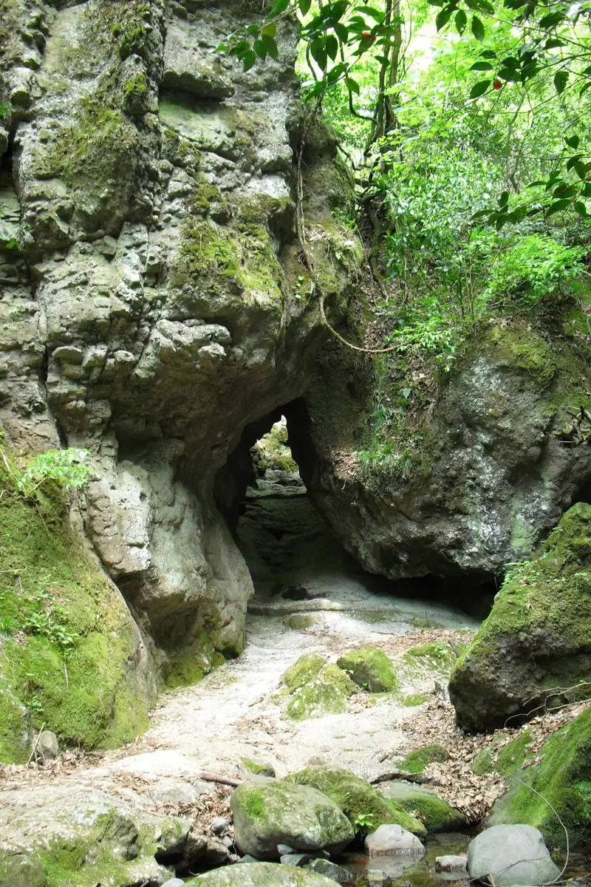
Dining
満福ラーメン
Manpuku Raamen
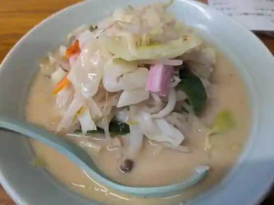
城井ふる里村
Shiroi Furu Satomura
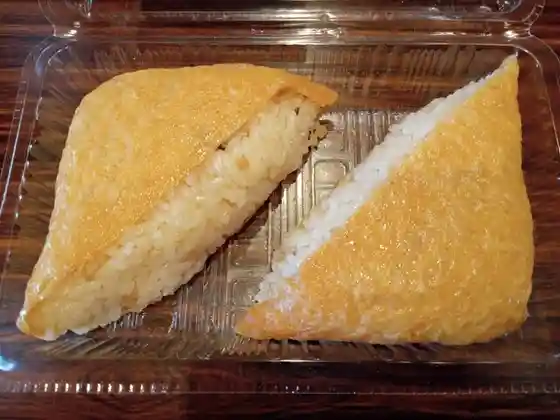
お食事処 龍馬
O Shokuji Tokoro Ryouma
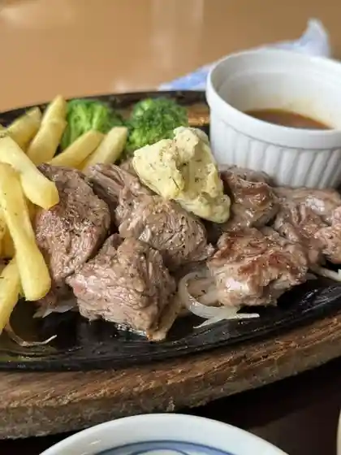
周防灘カントリークラブレストラン
Suou Nada Kantoriikuraburesutoran
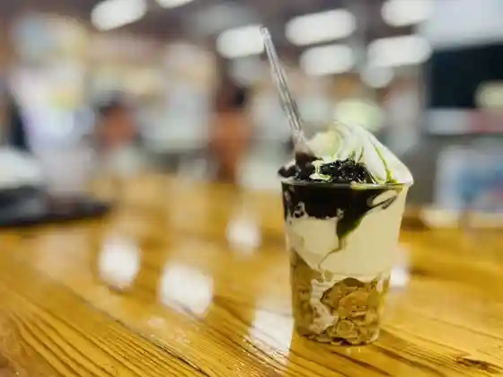
メタセの杜
Metase No Mori
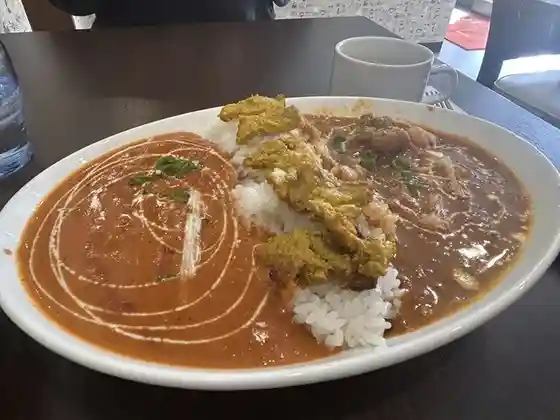
インド料理 ククリ
Indo Ryouri Kukuri
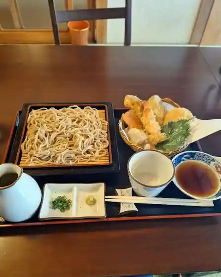
茂庵
Moan
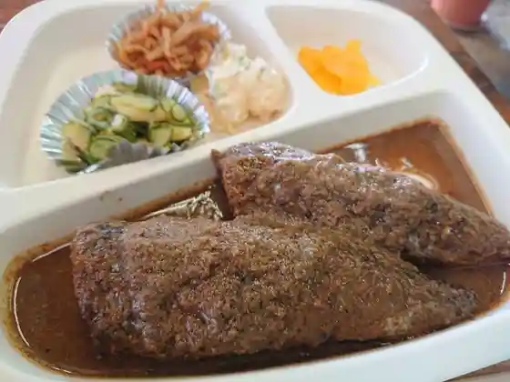
まる恵
Maru Megumi
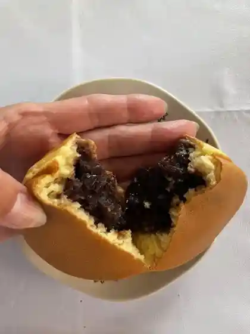
Anne
Anne
城井ふる里村バーベキュー
Shiroi Furu Satomura Baabekyuu
Baker Frog
Baker Frog
キクヤスカフェ
Kikuyasukafe
お好み焼き まるくる
O Konomi Yaki Marukuru
Book cafe 3rd Labo
Book cafe 3rd Labo
結いの石窯パン工房
Ketsu Ino Ishigama Pan Koubou
ウエスト 椎田店
Uesuto Shiida Mise
奈良漬さろん 安部
Nara Hitasa Ron Abe
カフェハウスアズ
Kafehausuazu
春乃勝
Haruno Kachi
やけっ八
Yaketsu Hachi
一味
Hitoaji
万嵯九
Man Sa Kyuu
松屋
Matsuya
グリーンベレー
Guriinberee
紀文
Kibun
亜土リブ
Ado Ribu
旬菜房あぐり
Jun Na Bou Aguri
リストランテ ダニエレ
Risutorante Daniere
ジョイフル 椎田店
Joifuru Shiida Mise
ニュー開城園
Nyuu Kaijou Sono
むすんでひらいて ルミエール椎田店
Musundehiraite Rumieeru Shiida Mise
清華園
Seika Sono
お好み焼みっちやん
O Konomi Yaki Mitchiyan
御菓子司 鹿の子
O Kashi Tsukasa Shika No Ko
nogroove
nogroove
中津からあげ からいち 築城駅前店
Nakatsu Karaage Karaichi Chikujou Ekimae Mise
本庄のパン屋さん じゅあん
Honjou No Pan Ya San Juan
工房よしかわ
Koubou Yoshikawa
うどん雅
Udon Masa
蔓松亭
Tsuru Matsu Tei
カフェレストラン凪 桜II番館
Kaferesutoran Nagi Sakura Ii Ban Kan
エースいちご
Eesu Ichigo
深川寿し
Fukagawa Hisashi Shi
食堂 和
Shokudo Wa
"しの田"""
""""
以蔵の小僧
Izou No Kozou
焼き鳥ごっつぁん
Yakitori Gottsuan
からあげ 鳳翔
Karaage Houshou
京築恵みの郷 ちくじょう店
Keichiku Megumi No Sato Chikujou Mise
ホルモン 焼肉 肉尊
Horumon Yakiniku Niku Mikoto
meli-melo 花夢
meli-melo
旧蔵内邸深翠居
Kyuuzou Nai Tei Shin Sui Kyo
ジェリコ
Jieriko
マコチキッチン
Makochikitchin
焼肉和楽
Yakiniku Wagaku
小袖
Kosode
こまどり
Komadori
GOLFBAR WANARE
GOLFBAR WANARE
AZcafe Shidaka 福岡築上店
AZcafe Shidaka
ダイニング セアリ
Dainingu Seari
HOTEL AZ 福岡築上店
HOTEL AZ
凜
Rin
杉の子
Sugi No Ko
New Kaijoen
New Kaijoen
Mampuku Ramen
Mampuku Ramen
Ryoma
Ryoma
Cafehouse As
Cafehouse As
West Shiida
West Shiida
Joyfull
Joyfull
Manshotei
Manshotei
Anchan
Anchan
Yakeppachi
Yakeppachi
Karaoke Lounge Last Chance
Karaoke Lounge Last Chance
Green Berets
Green Berets
Stardust
Stardust
Hamamiya Dininig Room
Hamamiya Dininig Room
Asahi Bento
Asahi Bento
Mitsui
Mitsui
Field of Tooth
Field of Tooth
Jericho
Jericho
Jumbo Shiida
Jumbo Shiida
New Sakura
New Sakura
Kariyushi
Kariyushi
Izakaya Chochin Mura
Izakaya Chochin Mura
Okame
Okame
Snack New Wing
Snack New Wing
Marukei
Marukei
Hasu
Hasu
Stay
HOTEL AZ 福岡築上店
HOTEL AZ

旧安楽旅館 YADO ease.
YADO ease.
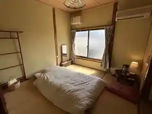
割烹旅館 紀文
Kappou Ryokan Kibun
Sights
Masamitsu Tera no Shiroi Higan Hana
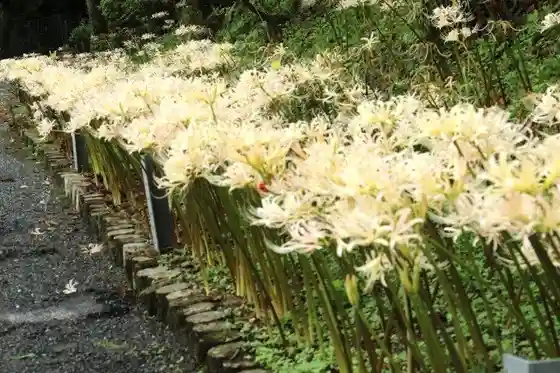
Kyuzo Nai Tei
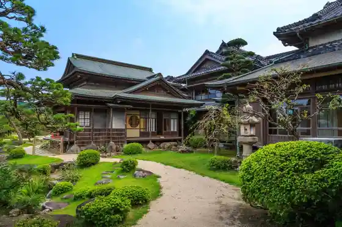
Furo Yama Masamitsu Tera
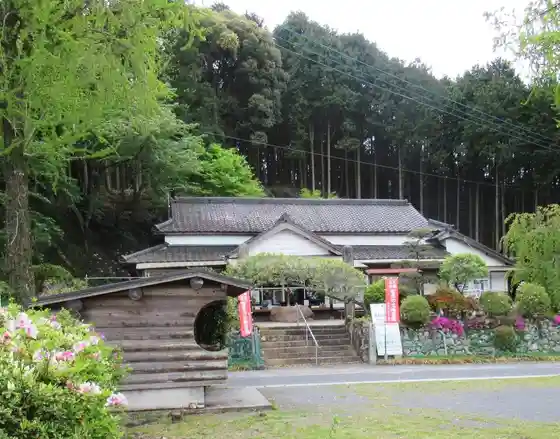
Chikujo Bussan Kan Metase no Mori
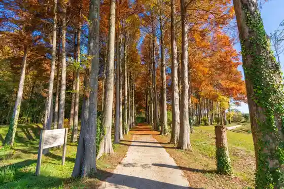
Metase no Mori Shuhen no Metasekoia no Autumn Leaves
Honjo no Ogusu
Hama no Miya Coast Shiohigari Ri
Shiroi no Ue Joshi
Shiida Aguri Park (Nogyo Park)
Shiroi Furu Sato Village
Shiida Ume Festival (Tsuna Shiki Tenmangu Shrine)
Tsuna Shiki Tenmangu Shrine
Maki no Hara Campground
Hama no Miya Coast
Tenjin Yama no Taishi Dare Sakura
Ko Minka Shoku Iori Denpo Tera Sho
Chikujo Jido Kan
Fune Sako Kamato Park
Makochi Village (Sawada Seisambutsu Chokubai Tokoro)
Kohaku Shi
Sawada Arare
Maki no Hara Campground Shuhen no Autumn Leaves
Shiroi Kawa Iwamaru Kawa Dote no Sakura Namiki
Basho Tsuka